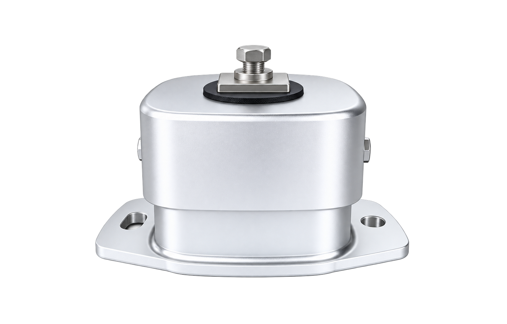
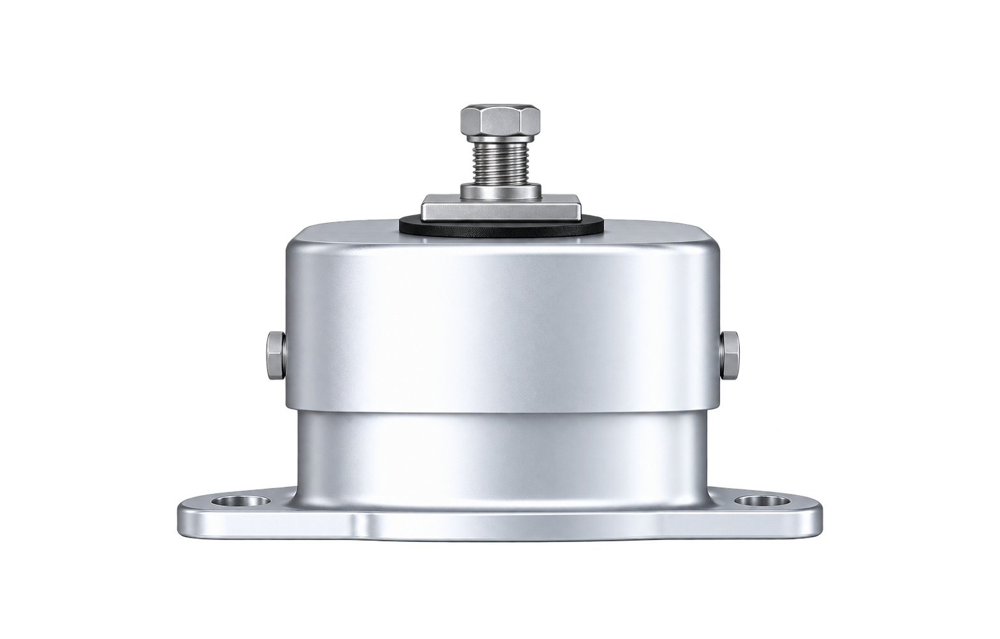

JHD / CATALOGUE PRODUCT VIEW
JHD 低频阻尼弹簧减振器全貌。
同一样册产品图片 · 全貌展示。
本页采用静态排版，保留内容，减少移动与模糊。系统如已开启减少动效，将继续尊重该设置。
已启用轻量模式：原生滚动，无固定滚动和磁吸。

全封闭铝合金外壳，抗横向剪切并控制侧向运动。
多曲线圆柱型弹簧，适应低频频率的要求。
JHD 系列弹簧减振器外形采用铝镁合金材质，产品具有良好的抗横向剪切性能，全封闭式铝合金外壳可有效防止机组横向载荷而位移。减振器中的弹簧采用多曲线圆柱型弹簧，收缩率远远大于多数橡胶材料，因此减振器适应低频频率的要求。同时会控制侧向运动，使水平方向的拉力大于垂直方向的拉力，从而能够使隔振器跟减振器连接，不会发生减振器或设备损坏的现象。
JHD-200 / JHD-260 / JHD-320 / JHD-400 / JHD-460 / JHD-520 / JHD-600 / JHD-650
8 种型号共用样册标示的最佳变形量。
全封闭铝合金外壳，
控制侧向运动。
来源：翰畴隔震产品样册，第11页。选型须结合设备载荷、安装空间与工况复核。
输入运行质量与支点分配，计算每点静态载荷，并与样册最佳载荷进行初步对照。所有计算仅在你的浏览器中完成。
填写设备数据后点击计算，查看每个支点的候选型号。非均分设备可逐点输入占比。

真实产品外观，
不推演未公开的内部结构。
拖动旋转，滚轮或捏合放大。模型由产品三维数模生成，便于查看外形与装配关系。
同一样册产品图片 · 全貌展示。
同一样册产品图片 · 顶部连接件细节，非另一组实拍。
可安装于轻质混凝土地面、木地板、钢结构。同一样册产品图片 · 非安装现场实拍。
JHD 低频阻尼弹簧减振器。
外形采用铝镁合金材质，全封闭式铝合金外壳可有效防止机组横向载荷而位移。弹簧采用多曲线圆柱型弹簧，适应低频频率的要求，并控制侧向运动。
适用于各种风机、风机盘管、新风机组、风机箱、水泵、精密仪器、仪表等设备的隔振。可安装于轻质混凝土地面、木地板、钢结构等平面。
| 型号 | H | W | M | L1 | L | 最佳载荷 kg | 最佳变形量 mm |
|---|---|---|---|---|---|---|---|
| JHD-200 | 118 | 140.0 | M12 | 200 | 240 | 200 | 20 |
| JHD-260 | 118 | 140.0 | M12 | 200 | 240 | 260 | 20 |
| JHD-320 | 118 | 140.0 | M12 | 200 | 240 | 320 | 20 |
| JHD-400 | 118 | 140.0 | M12 | 200 | 240 | 400 | 20 |
| JHD-460 | 118 | 140.0 | M12 | 200 | 240 | 460 | 20 |
| JHD-520 | 118 | 140.0 | M12 | 200 | 240 | 520 | 20 |
| JHD-600 | 118 | 140.0 | M12 | 200 | 240 | 600 | 20 |
| JHD-650 | 118 | 140.0 | M12 | 200 | 240 | 650 | 20 |
H、W、L1、L 为外形及安装尺寸，单位 mm；M 为螺纹规格。最佳载荷不等于最大承载，实际选型需技术确认。
下载原样册 JHD 单页 PDF来源：翰畴隔震产品样册第11页（2026 年版）。下载文件为该样册未改动单页，非概念资料。
查看样册参数，实际选型需技术确认。
参数来源：翰畴隔震产品样册第11页。原样册资料，非概念参数；最佳载荷不等于最大承载。在线计算仅提供静态载荷初步对照，不代替工程选型，也不提供商品销售。